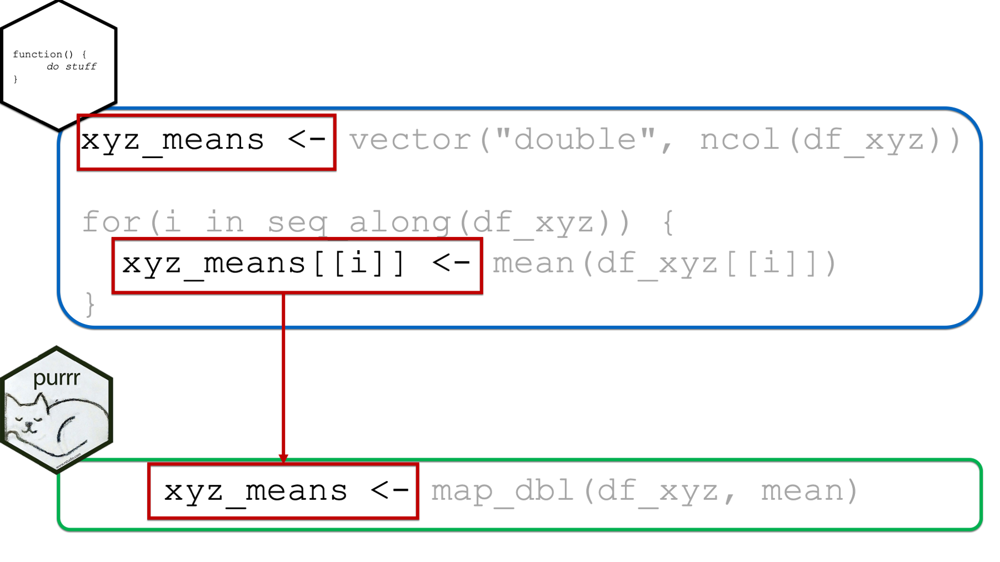
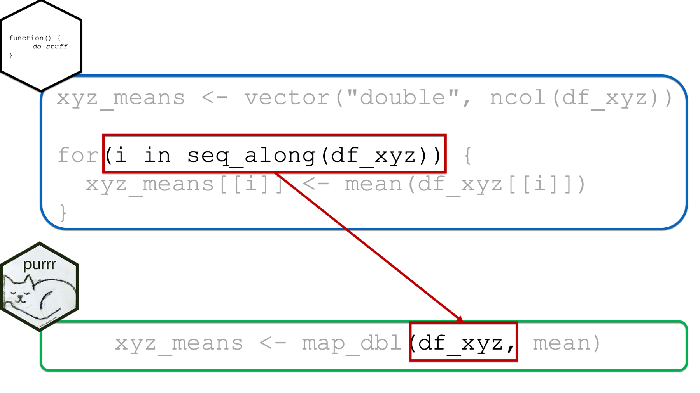

37 Using the purrr package
In this final chapter of the repeated operations part of the book, we are going to discuss the purrr package.

The purrr package provides a really robust set of functions that can help us more efficiently complete a bunch of different tasks in R. For the purposes of this chapter, however, we are going to focus on using the purrr::map functions as an alternative approach to removing unnecessary repetition from the various different code chunks we’ve already seen in other chapters.
For our purposes, you can think of the purrr::map functions as a replacement for for loops. In other words, you can think of them as doing the same thing as a for loop, but writing the code in a different way.
🗒Side Note: I also want to mention that the purrr package is closely related to base R’s apply functions (i.e., apply(), lapply(), sapply(), tapply()). We aren’t going to discuss those functions any further, but you will often see them mentioned side-by-side as solutions to a given coding challenge on websites like Stack Overflow. The purrr package is partially meant to be an improved replacement for the apply functions.
As usual, let’s start by taking a look at a simple example – the same one we used to start the chapter on column-wise operations and the chapter on writing for loops. Afterwards, we will compare the basic structure of purrr::map functions to the basic structure of for loops. Finally, we will work through a number of the examples we’ve already worked through in this part of the book using the purrr approach.
At this point, we will go ahead and load dplyr and purrr and simulate our data:
library(dplyr)
library(purrr)set.seed(123)
df_xyz <- tibble(
x = rnorm(10),
y = rnorm(10),
z = rnorm(10)
) %>%
print()## # A tibble: 10 × 3
## x y z
## <dbl> <dbl> <dbl>
## 1 -0.560 1.22 -1.07
## 2 -0.230 0.360 -0.218
## 3 1.56 0.401 -1.03
## 4 0.0705 0.111 -0.729
## 5 0.129 -0.556 -0.625
## 6 1.72 1.79 -1.69
## 7 0.461 0.498 0.838
## 8 -1.27 -1.97 0.153
## 9 -0.687 0.701 -1.14
## 10 -0.446 -0.473 1.25In the chapter on column-wise operations we used dplyr’s across() function to efficiently find the mean of each column in the df_xyz data frame:
df_xyz %>%
summarise(
across(
.cols = everything(),
.fns = mean,
.names = "{col}_mean"
)
)## # A tibble: 1 × 3
## x_mean y_mean z_mean
## <dbl> <dbl> <dbl>
## 1 0.0746 0.209 -0.425In the chapter on writing for loops, we learned an alternative approach that would also work:
xyz_means <- vector("double", ncol(df_xyz))
for(i in seq_along(df_xyz)) {
xyz_means[[i]] <- mean(df_xyz[[i]])
}
xyz_means## [1] 0.07462564 0.20862196 -0.42455887An alternative way to complete the analysis above is with the map_dbl() function from the purrr package like this:
xyz_means <- map_dbl(
.x = df_xyz,
.f = mean
)
xyz_means## x y z
## 0.07462564 0.20862196 -0.42455887👆Here’s what we did above:
We used
purr’smap_dbl()function to iteratively calculate the mean of each column in thedf_xyzdata frame. There are othermapfunctions besidemap_dbl(). We will eventually discuss them all.You can type
?purrr::map_dblinto your R console to view the help documentation for this function and follow along with the explanation below.The first argument to all of the
mapfunctions is the.xargument. You should pass the name of a list, data frame, or vector that you want to iterate over to the.xargument. If the object passed to the.xargument is a vector, thenmapwill apply the function passed to the.fargument (see below) to each element of the vector. If the object passed to the.xargument is a data frame, thenmapwill apply the function passed to the.fargument to each column of the data frame. Above, we passed thedf_xyzdata frame to the.x.The second argument to all of the
mapfunctions is the.fargument. You should pass the name of function, or functions, you want to apply iteratively to the object you passed to the.xargument. In the example above, we passed the mean function to the.fargument. Notice that we typedmeanwithout the parentheses.The third argument to all of the
mapfunctions is the...argument. In this case, the...argument is where we pass any additional arguments to the function we passed to the.fargument. For example, we passed themeanfunction to the.fargument above. If the data frame above had missing values, we could have passedna.rm = TRUEto themean()function using the...argument. We saw a similar example of this when we were learning aboutacross().
As you can see, using the map_dbl() package requires far less code than the for loop did, which has at least two potential advantages. First, it’s less typing, which means less opportunity for typos. Second, many people in the R community feel as though this functional (i.e., use of a function) approach to iteration is much easier to read and understand than the traditional for loop approach.
Additionally, you may have also noticed that we were able to assign the returned results of map_dbl(df_xyz, mean) to an object in our global environment in the usual way (i.e., with the assignment arrow). This eliminates the need for creating a structure to hold our results ahead of time as we had to do with the for loop.
Finally, when we use map_dbl() there isn’t a leftover index variable (i.e., i) floating around our global environment the way there was when we were writing for loops.
For those reasons, and possibly others, it’s been my observation that the majority of R users prefer the functional approach to iteration – either purrr or the apply functions – over using for loops in most situations.
However, my first experiences with programming were not with programming R. In fact, R was the third or fourth programming language I learned. And, all the others I had learned before R relied much more heavily on for loops. Perhaps for this reason, I tend to first think in terms of a for loop and then mentally convert the for loop to a map function before writing my code. Perhaps that is true for some of you reading this chapter as well. Therefore, the next section is going to compare and contrast the basic for loop with the map functions. You may find this section instructive or interesting even if you aren’t someone who first learned iteration using for loops.
37.1 Comparing for loops and the map functions

In this section, we will compare for loops and the purrr::map functions using the example from the beginning of the chapter.

It’s probably obvious to you at this point, but I’ll go ahead and say it anyway. When using purrr::map instead of a for loop, we will be using one of the map functions instead of the for() function.

Next, as previously discussed above, we are able to assign the returned results of map_dbl(df_xyz, mean) to an object in our global environment in the usual way (i.e., with the assignment arrow). This eliminates the need for creating a structure to hold our results ahead of time as we had to do with the for loop. It also eliminates the need to write code that explicitly updates the returned results structure at each iteration (i.e., xyz_means[[i]]) as we had to do with the for loop.
However, one nice byproduct of creating the structure to hold our returned results ahead of time was that doing so made it obvious what form and type we expected our results to take.

In the xyz_means example above, it’s obvious that we expected our returned results to be a vector of numbers because the structure we created to contain our results was a vector of type double.

When using the purrr::map functions, which map function we choose will serve the same purpose. In the example above, we used map_dbl(), which implied that we expected our results to be a vector of type double. In fact, it not only implied that our results should be a vector of type double, but it guaranteed that our results would be a vector of type double (or we would get an error). In this sense, the map functions are much safer to use than for loops – we don’t get unexpected results.
As a silly example, let’s say that we want to extract the number of letters in each name contained in a vector of names. We’ll start by creating a vector that contains three random names:
names <- c("Avril", "Joe", "Whitney")Next, let’s create a structure to contain our results:
n_letters <- vector("double", length(names)) # Expecting doubleThe code above (i.e., vector("double", length(names))) implies that we expect our results to be type double, which make sense if we expect our results to be the number of letters in some names.
Finally, let’s write our for loop:
for(i in seq_along(names)) {
n_letters[[i]] <- stringr::str_extract(names[[i]], "\\w") # Returns character
}
n_letters## [1] "A" "J" "W"Uh, oh! Those “counts” are letters! What happened? Well, apparently we thought that stringr::str_extract(names[[i]], "\\w") would return the count of letters in each name. In actuality, it returns the first letter in each name.
As I said before, this is a silly example. In this case, it’s easy to see and fix our mistake. However, it could be very difficult to debug this problem if the code were buried in a long script or inside of other functions.
Now, let’s see what happens when we use purrr. We still start with the names:
names <- c("Avril", "Joe", "Whitney")We also still imply our expectations that the returned result should be a numeric vector. However, this time we do so by using the map_dbl function:
n_letters <- map_dbl(
.x = names,
.f = stringr::str_extract, "\\w{1}"
)## Error: Can't coerce element 1 from a character to a doubleBut, this time, we don’t get an unexpected result. This time, we get an error. This may seem like a pain if you are new’ish to programming. But, believe me when I say that you would much rather get an error that you can go fix than an incorrect result that you are totally unaware of!
While we are discussing return types, let’s go ahead and introduce some of the other map functions. They are:
map_dbl(), which we’ve already seen. Themap_dbl()function always returns a numeric vector or an error.map_int(), which always returns an integer vector or an error.map_lgl(), which always returns a logical vector or an error.map_chr(), which always returns a character vector or an error.map_dfr(), which always returns a data frame created by row-binding results or an error.map_dfc(), which always returns a data frame created by column-binding results or an error.map(), which is the most generic, and always returns a list (or an error). We’ve haven’t discussed lists much in this book, but whenever something won’t fit into any other kind of object, it will fit into a list.walk(), which is the onlymapfunction without amapname. We will usewalk()when we are more interested in the “side-effects” of the function passed to.fthan its return value. What in the world does that mean? It means that the only thingwalk()“returns” is exactly what was passed to its.xargument. No matter what you pass to the.fargument, the object passed to.xwill be returned bywalk()unmodified. Your next question might be, “then what’s the point? How could that ever be useful?” Typically,walk()will only be useful to us for plotting (e.g., where you are interested in viewing the plots, but not saving them as an object) and/or data transfer (we will see an example of this below).

Next, the object we pass to the .x function of the map function replaces the entire i in seq_along(object) pattern that is passed to the for loop. Again, if the object passed to the .x argument is a vector, then map will apply the function passed to the .f argument to each element of the vector. If the object passed to the .x argument is a data frame, then map will apply the function passed to the .f argument to each column of the data frame.

Finally, the function passed to the .f argument can replace the rest of the “stuff” going on in the for loop body. We can pass a single function (e.g., mean) to the .f argument as we did above. However, we can also pass anonymous functions to the .f argument. We pass anonymous functions to the .f function in basically the exact same way passed anonymous functions to the .fns argument of the across() function in the chapter on column-wise operations. And, yes, we can also write our anonymous functions using purrr-style lambdas. In fact, the purrr-style lambda syntax is called the purrr-style lambda syntax because it was first created for the purrr package and later adopted by dplyr::across(). I bet that name makes a lot more sense than it did a couple of chapters ago!
That pretty much covers the basics of using the purrr::map functions. If you’ve been reading this book in sequence, there won’t really be any conceptually new material in this chapter. We’re basically going to do the same things we’ve been doing for the last couple of chapters. We’ll just be using a slightly different (and perhaps preferable) syntax. If you haven’t been reading the book in sequence, you might want to read the chapters on writing functions, column-wise operations, and writing for loops to get the most of the examples below.
37.2 Using purrr for data transfer
37.2.1 Example 1: Importing multiple sheets from an Excel workbook
In the chapter on writing functions we used a for loop to help us import data from an Excel workbook that was stored across multiple sheets. We will once again go through this example using the purrr approach.
The simulated data contains some demographic information about three different cities: Houston, Atlanta, and Charlotte. In this scenario, we need to import each sheet, clean the data, and combine them into a single data frame in order to complete our analysis. First, we will load the readxl package:
library(readxl)You may click here to download this file to your computer.
Then, we may import each sheet like this:
houston <- read_excel(
"/Users/bradcannell/Dropbox/Datasets/Cities SES/city_ses.xlsx",
sheet = "Houston"
)
atlanta <- read_excel(
"/Users/bradcannell/Dropbox/Datasets/Cities SES/city_ses.xlsx",
sheet = "Atlanta"
)
charlotte <- read_excel(
"/Users/bradcannell/Dropbox/Datasets/Cities SES/city_ses.xlsx",
sheet = "Charlotte"
)🚩In the code chunks above, we have essentially the same code copied more than twice. That’s a red flag that we should be thinking about removing unnecessary repetition from our code. So, our next step was to write a function to remove some of the unnecessary repetition:
import_cities <- function(sheet) {
df <- read_excel(
"/Users/bradcannell/Dropbox/Datasets/Cities SES/city_ses.xlsx",
sheet = sheet
)
}
houston <- import_cities("Houston")
atlanta <- import_cities("Atlanta")
charlotte <- import_cities("Charlotte")🚩However, that approach still has some repetition. So, we next learned how to use a for loop as an alternative approach:
path <- "/Users/bradcannell/Dropbox/Datasets/Cities SES/city_ses.xlsx"
sheets <- excel_sheets(path)
for(i in seq_along(sheets)) {
new_nm <- tolower(sheets[[i]])
assign(new_nm, read_excel(path, sheet = sheets[[i]]))
}That works just fine! However, we could alternatively use purrr::walk() instead like this:
# Save the file path to an object so we don't have to type it repeatedly
# or hard-code it in.
path <- "/Users/bradcannell/Dropbox/Datasets/Cities SES/city_ses.xlsx"
walk(
.x = excel_sheets(path),
.f = function(x) {
new_nm <- tolower(x)
assign(new_nm, read_excel(path, sheet = x), envir = .GlobalEnv)
}
)houston## # A tibble: 5 × 4
## pid age sex ses_score
## <chr> <dbl> <chr> <dbl>
## 1 001 13 F 88
## 2 003 13 F 78
## 3 007 14 M 83
## 4 014 12 F 76
## 5 036 13 M 84atlanta## # A tibble: 5 × 4
## id age gender ses_score
## <chr> <dbl> <chr> <dbl>
## 1 002 14 M 64
## 2 009 15 M 35
## 3 012 13 F 70
## 4 013 13 F 66
## 5 022 12 F 59charlotte## # A tibble: 5 × 4
## pid age sex ses
## <chr> <dbl> <chr> <dbl>
## 1 004 13 F 84
## 2 011 14 M 66
## 3 018 12 M 92
## 4 023 12 M 89
## 5 030 13 F 83👆Here’s what we did above:
We used the
walk()function from thepurrrpackage to import every sheet from an Excel workbook.First, we saved the path to the Excel workbook to a separate object. We didn’t have to do this. However, doing so prevented us from having to type out the full file path repeatedly in the rest of our code. Additionally, if the file path ever changed, we would only have to update it in one place.
Second, we passed the return value of the
excel_sheets()function, which is a character vector containing each sheet name, to the.xargument of thewalk()function. We didn’t have to do this. We could have typed each sheet name manually. However, there shouldn’t be any accidental typos if we use theexcel_sheets()function, and we don’t have to make any changes to our code if more sheets are added to the Workbook in the future.Third, we passed an anonymous function to the
walk()’s.fargument. Inside the anonymous function, we assigned each data frame created by theread_excel()function to our global environment using theassign()function. Notice that because we are using theassign()inside of another function, we have to explicitly tell theassign()function to assign the data frames being imported to the global environment usingenvir = .GlobalEnv. Without getting too technical, keep in mind that functions create their own little enclosed environments (see a discussion here), which makes theenvir = .GlobalEnvpart necessary.
Additionally, you may have some questions swirling around your head right now about the walk() function itself. In particular, I’m imagining that you are wondering why we used walk() instead of map() and why we didn’t assign the return value of walk() to an object. I’ll answer both questions next.
37.2.2 Why walk instead of map?
The short answer is that map functions return one thing (i.e., a vector, list, or data frame). In this situation, we wanted to “return” three things (i.e., the houston data frame, the atlanta data frame, and the charlotte data frame).
Technically, we could have used the map() function to return a list of data frames like this:
list_of_df <- map(
.x = excel_sheets(path),
.f = ~ read_excel(path, sheet = .x)
)str(list_of_df)## List of 3
## $ : tibble [5 × 4] (S3: tbl_df/tbl/data.frame)
## ..$ pid : chr [1:5] "001" "003" "007" "014" ...
## ..$ age : num [1:5] 13 13 14 12 13
## ..$ sex : chr [1:5] "F" "F" "M" "F" ...
## ..$ ses_score: num [1:5] 88 78 83 76 84
## $ : tibble [5 × 4] (S3: tbl_df/tbl/data.frame)
## ..$ id : chr [1:5] "002" "009" "012" "013" ...
## ..$ age : num [1:5] 14 15 13 13 12
## ..$ gender : chr [1:5] "M" "M" "F" "F" ...
## ..$ ses_score: num [1:5] 64 35 70 66 59
## $ : tibble [5 × 4] (S3: tbl_df/tbl/data.frame)
## ..$ pid: chr [1:5] "004" "011" "018" "023" ...
## ..$ age: num [1:5] 13 14 12 12 13
## ..$ sex: chr [1:5] "F" "M" "M" "M" ...
## ..$ ses: num [1:5] 84 66 92 89 83From there, we could extract and modify each data frame from the list like this:
houston <- list_of_df[[1]]
houston## # A tibble: 5 × 4
## pid age sex ses_score
## <chr> <dbl> <chr> <dbl>
## 1 001 13 F 88
## 2 003 13 F 78
## 3 007 14 M 83
## 4 014 12 F 76
## 5 036 13 M 84atlanta <- list_of_df[[2]]
atlanta## # A tibble: 5 × 4
## id age gender ses_score
## <chr> <dbl> <chr> <dbl>
## 1 002 14 M 64
## 2 009 15 M 35
## 3 012 13 F 70
## 4 013 13 F 66
## 5 022 12 F 59charlotte <- list_of_df[[2]]
charlotte## # A tibble: 5 × 4
## id age gender ses_score
## <chr> <dbl> <chr> <dbl>
## 1 002 14 M 64
## 2 009 15 M 35
## 3 012 13 F 70
## 4 013 13 F 66
## 5 022 12 F 59Of course, now we have a bunch of repetition again! Alternatively, we could have also used the map_dfr(), which always returns a data frame created by row-binding results or an error. You can think of map_dfr() as taking the three data frames above and passing them to the bind_rows() function and returning that result:
# Passing list_of_df to bind_rows()
bind_rows(list_of_df)## # A tibble: 15 × 7
## pid age sex ses_score id gender ses
## <chr> <dbl> <chr> <dbl> <chr> <chr> <dbl>
## 1 001 13 F 88 <NA> <NA> NA
## 2 003 13 F 78 <NA> <NA> NA
## 3 007 14 M 83 <NA> <NA> NA
## 4 014 12 F 76 <NA> <NA> NA
## 5 036 13 M 84 <NA> <NA> NA
## 6 <NA> 14 <NA> 64 002 M NA
## 7 <NA> 15 <NA> 35 009 M NA
## 8 <NA> 13 <NA> 70 012 F NA
## 9 <NA> 13 <NA> 66 013 F NA
## 10 <NA> 12 <NA> 59 022 F NA
## 11 004 13 F NA <NA> <NA> 84
## 12 011 14 M NA <NA> <NA> 66
## 13 018 12 M NA <NA> <NA> 92
## 14 023 12 M NA <NA> <NA> 89
## 15 030 13 F NA <NA> <NA> 83# Using map_dfr() to directly produce the same result
cities <- map_dfr(
.x = excel_sheets(path),
.f = ~ read_excel(path, sheet = .x)
)
cities## # A tibble: 15 × 7
## pid age sex ses_score id gender ses
## <chr> <dbl> <chr> <dbl> <chr> <chr> <dbl>
## 1 001 13 F 88 <NA> <NA> NA
## 2 003 13 F 78 <NA> <NA> NA
## 3 007 14 M 83 <NA> <NA> NA
## 4 014 12 F 76 <NA> <NA> NA
## 5 036 13 M 84 <NA> <NA> NA
## 6 <NA> 14 <NA> 64 002 M NA
## 7 <NA> 15 <NA> 35 009 M NA
## 8 <NA> 13 <NA> 70 012 F NA
## 9 <NA> 13 <NA> 66 013 F NA
## 10 <NA> 12 <NA> 59 022 F NA
## 11 004 13 F NA <NA> <NA> 84
## 12 011 14 M NA <NA> <NA> 66
## 13 018 12 M NA <NA> <NA> 92
## 14 023 12 M NA <NA> <NA> 89
## 15 030 13 F NA <NA> <NA> 83There would be absolutely nothing wrong with taking this approach and then cleaning up the combined data you see above. However, my preference in this case was to import each sheet as a separate data frame, clean up each separate data frame, and then combine myself. If your preference is to use map_dfr() instead, then you definitely should.
37.2.3 why we didn’t assign the return value of walk() to an object?
As we discussed above, the only thing walk() “returns” is exactly what was passed to its .x argument. No matter what you pass to the .f argument, the object passed to .x will be returned by walk() unmodified. In this case, that would just be the sheet names:
returned_by_walk <- walk(
.x = excel_sheets(path),
.f = function(x) {
new_nm <- tolower(x)
assign(new_nm, read_excel(path, sheet = x), envir = .GlobalEnv)
}
)
returned_by_walk## [1] "Houston" "Atlanta" "Charlotte"Don’t be confused, the data frames are still being imported and assigned to the global environment via the anonymous function we passed to .f above. But, but those data frames aren’t the values returned by walk() – They are a side-effect of the operations taking place inside of walk().
## Warning in rm(returned_by_walk, atlanta, charlotte, houston): object 'atlanta' not found## Warning in rm(returned_by_walk, atlanta, charlotte, houston): object 'charlotte' not found## Warning in rm(returned_by_walk, atlanta, charlotte, houston): object 'houston' not foundFinally, we could make our original walk() code slightly more concise by using the purrr-style lambda syntax to write our anonymous function like this:
path <- "/Users/bradcannell/Dropbox/Datasets/Cities SES/city_ses.xlsx"
walk(
.x = excel_sheets(path),
.f = ~ assign(tolower(.), read_excel(path, sheet = .), envir = .GlobalEnv)
)houston## # A tibble: 5 × 4
## pid age sex ses_score
## <chr> <dbl> <chr> <dbl>
## 1 001 13 F 88
## 2 003 13 F 78
## 3 007 14 M 83
## 4 014 12 F 76
## 5 036 13 M 84atlanta## # A tibble: 5 × 4
## id age gender ses_score
## <chr> <dbl> <chr> <dbl>
## 1 002 14 M 64
## 2 009 15 M 35
## 3 012 13 F 70
## 4 013 13 F 66
## 5 022 12 F 59charlotte## # A tibble: 5 × 4
## pid age sex ses
## <chr> <dbl> <chr> <dbl>
## 1 004 13 F 84
## 2 011 14 M 66
## 3 018 12 M 92
## 4 023 12 M 89
## 5 030 13 F 83## Warning in rm(atlanta, charlotte, houston, path): object 'atlanta' not found## Warning in rm(atlanta, charlotte, houston, path): object 'charlotte' not found## Warning in rm(atlanta, charlotte, houston, path): object 'houston' not found37.3 Using purrr for data management
37.3.1 Example 1: Adding NA at multiple positions
We’ll start this section with a relatively simple example using the same data we used to start the chapter on column-wise operations and the chapter on writing for loops.
set.seed(123)
df_xyz <- tibble(
x = rnorm(10),
y = rnorm(10),
z = rnorm(10)
) %>%
print()## # A tibble: 10 × 3
## x y z
## <dbl> <dbl> <dbl>
## 1 -0.560 1.22 -1.07
## 2 -0.230 0.360 -0.218
## 3 1.56 0.401 -1.03
## 4 0.0705 0.111 -0.729
## 5 0.129 -0.556 -0.625
## 6 1.72 1.79 -1.69
## 7 0.461 0.498 0.838
## 8 -1.27 -1.97 0.153
## 9 -0.687 0.701 -1.14
## 10 -0.446 -0.473 1.25In those chapters, we used the code below to add missing values to our data frame:
df_xyz$x[2] <- NA_real_
df_xyz$y[4] <- NA_real_
df_xyz$z[6] <- NA_real_
df_xyz## # A tibble: 10 × 3
## x y z
## <dbl> <dbl> <dbl>
## 1 -0.560 1.22 -1.07
## 2 NA 0.360 -0.218
## 3 1.56 0.401 -1.03
## 4 0.0705 NA -0.729
## 5 0.129 -0.556 -0.625
## 6 1.72 1.79 NA
## 7 0.461 0.498 0.838
## 8 -1.27 -1.97 0.153
## 9 -0.687 0.701 -1.14
## 10 -0.446 -0.473 1.25Dealing with those missing values, rather than adding those missing values was the point of the previously mentioned examples. So, we ignored the unnecessary repetition in the code above. But, for all the reasons we’ve been discussing, we should strive to write more robust code. Imagine, for example, that you were adding missing data to hundreds or thousands of rows as part of a simulation study. Using the method above would become problematic pretty quickly.
In this case, I think it might be useful to start our solution with writing a function (click here to review function writing). Let’s name our function add_na_at() because it helps us add an NA value to a vector at a position of our choosing. Logically, then, it follows that we will need to be able to pass our function a vector that we want to add the NA value to, and a position to add the NA value at. So, our first attempt might look something like this:
add_na_at <- function(vect, pos) {
vect[[pos]] <- NA
}Let’s test it out:
add_na_at(df_xyz$x, 2) %>% print()## [1] NAIs a single NA the result we wanted? Nope! If this result is surprising to you, please review the section of the writing functions chapter on return values. Briefly, the last line of our function body is the single value df_xyz$x[[2]], which was set to be equal to NA. But, we don’t want our function to return just one position of the vector – we want it to return the entire vector. So, let’s reference the entire vector on the last line of the function body:
add_na_at <- function(vect, pos) {
vect[[pos]] <- NA
vect
}add_na_at(df_xyz$x, 2)## [1] -0.56047565 NA 1.55870831 0.07050839 0.12928774 1.71506499 0.46091621
## [8] -1.26506123 -0.68685285 -0.44566197That’s better! Again, we know that data frame columns are vectors, so we can use our new function inside of mutate to add NA values to each column in our data frame at a position of our choosing:
df_xyz %>%
mutate(
x = add_na_at(x, 2),
y = add_na_at(y, 4),
z = add_na_at(z, 6)
)## # A tibble: 10 × 3
## x y z
## <dbl> <dbl> <dbl>
## 1 -0.560 1.22 -1.07
## 2 NA 0.360 -0.218
## 3 1.56 0.401 -1.03
## 4 0.0705 NA -0.729
## 5 0.129 -0.556 -0.625
## 6 1.72 1.79 NA
## 7 0.461 0.498 0.838
## 8 -1.27 -1.97 0.153
## 9 -0.687 0.701 -1.14
## 10 -0.446 -0.473 1.25I can hear what you are saying now. “Sure, that’s the result we wanted, but we didn’t eliminate very much repetitive code.” You are not wrong. A case could be made that this code is easier to quickly glance at and understand, but it isn’t much less repetitive. That’s where purrr comes in. Let’s try using purrr to come up with a better solution now.
The first question we might ask ourselves is, “which map function should we choose?” Well, we know we want our end result to be a data frame, so it makes sense for us to choose either map_dfr or map_dfc. However, I personally find it useful to start with the plain map() function that returns a list as I begin to experiment with solving a problem using purrr. I think I do that because R can put almost anything into a list, and therefore, we will almost always get something returned to us (as opposed to an error) by map(). Further, the thing returned to us typically can provide us with some insight into what’s going on inside .f.
Next, we know that we want to iterate over every column of the df_xyz data frame. So, we can pass it to the .x argument.
We also know that we want each column to get passed to the vect argument of add_na_at() iteratively. So, we want to pass add_na_at (without parentheses) to the .f argument.
Finally, we can’t supply add_na_at() with just one argument – the vector – can we?
add_na_at(df_xyz$x)## Error in vect[[pos]] <- NA: [[ ]] with missing subscriptNo way! We have to give it position as well. Do you remember which argument allows us to pass any additional arguments to the function we passed to the .f argument?
The ... argument is where we pass any additional arguments to the function we passed to the .f argument. But remember, we don’t actually type out ... =. We simply type additional arguments, separated by commas, after the function name supplied to .f:
map(
.x = df_xyz,
.f = add_na_at, 2
)## $x
## [1] -0.56047565 NA 1.55870831 0.07050839 0.12928774 1.71506499 0.46091621
## [8] -1.26506123 -0.68685285 -0.44566197
##
## $y
## [1] 1.2240818 NA 0.4007715 NA -0.5558411 1.7869131 0.4978505 -1.9666172
## [9] 0.7013559 -0.4727914
##
## $z
## [1] -1.0678237 NA -1.0260044 -0.7288912 -0.6250393 NA 0.8377870 0.1533731
## [9] -1.1381369 1.2538149Or alternatively, we can use the purrr-style lambda to pass our function to .f:
map(
.x = df_xyz,
.f = ~ add_na_at(.x, 2)
)## $x
## [1] -0.56047565 NA 1.55870831 0.07050839 0.12928774 1.71506499 0.46091621
## [8] -1.26506123 -0.68685285 -0.44566197
##
## $y
## [1] 1.2240818 NA 0.4007715 NA -0.5558411 1.7869131 0.4978505 -1.9666172
## [9] 0.7013559 -0.4727914
##
## $z
## [1] -1.0678237 NA -1.0260044 -0.7288912 -0.6250393 NA 0.8377870 0.1533731
## [9] -1.1381369 1.2538149Notice that we have to use the special .x symbol inside the function call where we would normally want to type the name of the column we want the function to operate on. We saw something similar before in the chapter on column-wise operations.
Now, let’s discuss the result we are getting. The result you see above is a list, which is what map() will always return to us. Specifically, this is a list with three elements – x, y, and z. Each element of the list is a vector of numbers. Does this feel familiar? Does it seem sort of similar to a data frame? If so, good intuition! In R, a data frame is a list. It’s simply a special case of a list. It’s a special case because all vectors in the data frame must have the length, and because R knows to print each vector to the screen as a column. In fact, we can easily convert the list above to a data frame by passing it to the as.data.frame() function:
map(
.x = df_xyz,
.f = ~ add_na_at(.x, 2)
) %>%
as.data.frame()## x y z
## 1 -0.56047565 1.2240818 -1.0678237
## 2 NA NA NA
## 3 1.55870831 0.4007715 -1.0260044
## 4 0.07050839 NA -0.7288912
## 5 0.12928774 -0.5558411 -0.6250393
## 6 1.71506499 1.7869131 NA
## 7 0.46091621 0.4978505 0.8377870
## 8 -1.26506123 -1.9666172 0.1533731
## 9 -0.68685285 0.7013559 -1.1381369
## 10 -0.44566197 -0.4727914 1.2538149Alternatively, we could just use map_dfc as a shortcut instead:
map_dfc(
.x = df_xyz,
.f = ~ add_na_at(.x, 2)
)## # A tibble: 10 × 3
## x y z
## <dbl> <dbl> <dbl>
## 1 -0.560 1.22 -1.07
## 2 NA NA NA
## 3 1.56 0.401 -1.03
## 4 0.0705 NA -0.729
## 5 0.129 -0.556 -0.625
## 6 1.72 1.79 NA
## 7 0.461 0.498 0.838
## 8 -1.27 -1.97 0.153
## 9 -0.687 0.701 -1.14
## 10 -0.446 -0.473 1.25Why map_dfc instead of map_dfr? Because we want to combine x, y, and z together as columns, not as rows.
Ok, so we almost have the solution we want. There’s just one problem. In the code above, the NA is always being put into the second position because we have 2 hard-coded into add_na_at(.x, 2). We need a way to iterate over our columns and a set of numbers simultaneously in order to get the final result we want. Fortunately, that’s exactly what the map2 variants (i.e., map2_dbl(), map2_int(), map2_lgl(), etc.) of each of the map functions allows us to do.
Instead of supplying map a single object to iterate over (i.e., .x) we can supply it with two objects to iterate over (i.e., .x and .y):
map2_dfc(
.x = df_xyz,
.y = c(2, 4, 6),
.f = ~ add_na_at(.x, .y)
)## # A tibble: 10 × 3
## x y z
## <dbl> <dbl> <dbl>
## 1 -0.560 1.22 -1.07
## 2 NA 0.360 -0.218
## 3 1.56 0.401 -1.03
## 4 0.0705 NA -0.729
## 5 0.129 -0.556 -0.625
## 6 1.72 1.79 NA
## 7 0.461 0.498 0.838
## 8 -1.27 -1.97 0.153
## 9 -0.687 0.701 -1.14
## 10 -0.446 -0.473 1.25This can sometimes take a second to wrap your mind around. Here’s an illustration that may help:

In the first iteration, .x took on the value of the first column in the df_xyz data frame (i.e., x) and .y took on the value of the first element in the numeric vector that we passed to the .y argument (i.e., 2). Then, the .x and .y were replaced with df_xyz$x and 2 respectively in the function we passed to .f. The result of that iteration was a vector of numbers that was identical to df_xyz$x except that its second element was an NA.

In the second iteration, .x took on the value of the second column in the df_xyz data frame (i.e., y) and .y took on the value of the second element in the numeric vector that we passed to the .y argument (i.e., 4). Then, the .x and .y were replaced with df_xyz$y and 4 respectively in the function we passed to .f. The result of that iteration was a vector of numbers that was identical to df_xyz$y except that its fourth element was an NA.

In the third iteration, .x took on the value of the third column in the df_xyz data frame (i.e., z) and .y took on the value of the third element in the numeric vector that we passed to the .y argument (i.e., 6). Then, the .x and .y were replaced with df_xyz$z and 6 respectively in the function we passed to .f. The result of that iteration was a vector of numbers that was identical to df_xyz$z except that its sixth element was an NA.
Finally, map2_dfc() passed all of these vectors to bind_cols() (invisibly to us) and returned them as a data frame.
The code above gives us our entire solution. But, if we really were using this code in a simulation with hundreds or thousands of columns, we probably wouldn’t want to manually supply a vector of column positions to the .y argument. Instead, we could use the sample() function to supply random column positions to the .y argument like this:
set.seed(8142020)
map2_dfc(
.x = df_xyz,
.y = sample(1:10, 3, TRUE),
.f = ~ add_na_at(.x, .y)
)## # A tibble: 10 × 3
## x y z
## <dbl> <dbl> <dbl>
## 1 -0.560 NA -1.07
## 2 NA 0.360 -0.218
## 3 1.56 0.401 -1.03
## 4 0.0705 NA -0.729
## 5 0.129 -0.556 -0.625
## 6 1.72 1.79 NA
## 7 0.461 0.498 0.838
## 8 -1.27 -1.97 NA
## 9 NA 0.701 -1.14
## 10 -0.446 -0.473 1.25Pretty nice, right?
Before moving on, I want to point out that we did not have to create the add_na_at() function ahead of time the way we did. If we didn’t think we would need to use add_na_at() in any other part of our program, we might have decided to pass the code inside of add_na_at() to the .f argument as an anonymous function instead.
As a reminder, here is what our named function looks like:
add_na_at <- function(vect, pos) {
vect[[pos]] <- NA
vect
}And here is what our purrr code would look like if we used an anonymous function instead:
map2_dfc(
.x = df_xyz,
.y = c(2, 4, 6),
.f = function(vect, pos) {
vect[[pos]] <- NA
vect
}
)## # A tibble: 10 × 3
## x y z
## <dbl> <dbl> <dbl>
## 1 -0.560 1.22 -1.07
## 2 NA 0.360 -0.218
## 3 1.56 0.401 -1.03
## 4 0.0705 NA -0.729
## 5 0.129 -0.556 -0.625
## 6 1.72 1.79 NA
## 7 0.461 0.498 0.838
## 8 -1.27 -1.97 0.153
## 9 -0.687 0.701 -1.14
## 10 -0.446 -0.473 1.25Or, if we used a purrr-style lambda anonymous function instead:
map2_dfc(
.x = df_xyz,
.y = c(2, 4, 6),
.f = ~ {
.x[[.y]] <- NA
.x
}
)## # A tibble: 10 × 3
## x y z
## <dbl> <dbl> <dbl>
## 1 -0.560 1.22 -1.07
## 2 NA 0.360 -0.218
## 3 1.56 0.401 -1.03
## 4 0.0705 NA -0.729
## 5 0.129 -0.556 -0.625
## 6 1.72 1.79 NA
## 7 0.461 0.498 0.838
## 8 -1.27 -1.97 0.153
## 9 -0.687 0.701 -1.14
## 10 -0.446 -0.473 1.25Whichever style you choose to use is largely just a matter of preference in this case (as it is in many cases).
37.3.2 Example 2. Detecting matching values by position
In the chapter on writing functions, we created an is_match() function. In that scenario, we wanted to see if first name, last name, and street name matched at each ID between our data frames. More specifically, we wanted to combine the two data frames into a single data frame and create three new dummy variables that indicated whether first name, last name, and address matched respectively.
Here are the data frames we simulated and combined:
people_1 <- tribble(
~id_1, ~name_first_1, ~name_last_1, ~street_1,
1, "Easton", NA, "Alameda",
2, "Elias", "Salazar", "Crissy Field",
3, "Colton", "Fox", "San Bruno",
4, "Cameron", "Warren", "Nottingham",
5, "Carson", "Mills", "Jersey",
6, "Addison", "Meyer", "Tingley",
7, "Aubrey", "Rice", "Buena Vista",
8, "Ellie", "Schmidt", "Division",
9, "Robert", "Garza", "Red Rock",
10, "Stella", "Daniels", "Holland"
)
people_2 <- tribble(
~id_2, ~name_first_2, ~name_last_2, ~street_2,
1, "Easton", "Stone", "Alameda",
2, "Elas", "Salazar", "Field",
3, NA, "Fox", NA,
4, "Cameron", "Waren", "Notingham",
5, "Carsen", "Mills", "Jersey",
6, "Adison", NA, NA,
7, "Aubrey", "Rice", "Buena Vista",
8, NA, "Schmidt", "Division",
9, "Bob", "Garza", "Red Rock",
10, "Stella", NA, "Holland"
)
people <- people_1 %>%
bind_cols(people_2) %>%
print()## # A tibble: 10 × 8
## id_1 name_first_1 name_last_1 street_1 id_2 name_first_2 name_last_2 street_2
## <dbl> <chr> <chr> <chr> <dbl> <chr> <chr> <chr>
## 1 1 Easton <NA> Alameda 1 Easton Stone Alameda
## 2 2 Elias Salazar Crissy Field 2 Elas Salazar Field
## 3 3 Colton Fox San Bruno 3 <NA> Fox <NA>
## 4 4 Cameron Warren Nottingham 4 Cameron Waren Notingham
## 5 5 Carson Mills Jersey 5 Carsen Mills Jersey
## 6 6 Addison Meyer Tingley 6 Adison <NA> <NA>
## 7 7 Aubrey Rice Buena Vista 7 Aubrey Rice Buena Vista
## 8 8 Ellie Schmidt Division 8 <NA> Schmidt Division
## 9 9 Robert Garza Red Rock 9 Bob Garza Red Rock
## 10 10 Stella Daniels Holland 10 Stella <NA> HollandHere is the function we wrote to help us create the dummy variables:
is_match <- function(value_1, value_2) {
result <- value_1 == value_2
result <- if_else(is.na(result), FALSE, result)
result
}And here is how we applied the function we wrote to get our results:
people %>%
mutate(
name_first_match = is_match(name_first_1, name_first_2),
name_last_match = is_match(name_last_1, name_last_2),
street_match = is_match(street_1, street_2)
) %>%
# Order like columns next to each other for easier comparison
select(id_1, starts_with("name_f"), starts_with("name_l"), starts_with("s"))## # A tibble: 10 × 10
## id_1 name_first_1 name_first_2 name_first_match name_last_1 name_last_2 name_last_match
## <dbl> <chr> <chr> <lgl> <chr> <chr> <lgl>
## 1 1 Easton Easton TRUE <NA> Stone FALSE
## 2 2 Elias Elas FALSE Salazar Salazar TRUE
## 3 3 Colton <NA> FALSE Fox Fox TRUE
## 4 4 Cameron Cameron TRUE Warren Waren FALSE
## 5 5 Carson Carsen FALSE Mills Mills TRUE
## 6 6 Addison Adison FALSE Meyer <NA> FALSE
## 7 7 Aubrey Aubrey TRUE Rice Rice TRUE
## 8 8 Ellie <NA> FALSE Schmidt Schmidt TRUE
## 9 9 Robert Bob FALSE Garza Garza TRUE
## 10 10 Stella Stella TRUE Daniels <NA> FALSE
## # … with 3 more variables: street_1 <chr>, street_2 <chr>, street_match <lgl>🚩However, in the code chunk above, we still have essentially the same code copied more than twice. That’s a red flag that we should be thinking about removing unnecessary repetition from our code. Because we are using dplyr, and all of our data resides inside of a single data frame, your first instinct might be to use across() inside of mutate() to perform column-wise operations. Unfortunately, that method won’t work in this scenario.
The across() function will apply the function we pass to the .fns argument to each column passed to the .cols argument, one at a time. But, we need to pass two columns at a time to the is_match() function. For example, name_first_1 and name_first_2. That makes this task a little trickier than most. But, here’s how we accomplished it using a for loop:
cols <- c("name_first", "name_last", "street")
for(i in seq_along(cols)) {
col_1 <- paste0(cols[[i]], "_1")
col_2 <- paste0(cols[[i]], "_2")
new_col <- paste0(cols[[i]], "_match")
people[[new_col]] <- is_match(people[[col_1]], people[[col_2]])
}
people %>%
select(id_1, starts_with("name_f"), starts_with("name_l"), starts_with("s"))## # A tibble: 10 × 10
## id_1 name_first_1 name_first_2 name_first_match name_last_1 name_last_2 name_last_match
## <dbl> <chr> <chr> <lgl> <chr> <chr> <lgl>
## 1 1 Easton Easton TRUE <NA> Stone FALSE
## 2 2 Elias Elas FALSE Salazar Salazar TRUE
## 3 3 Colton <NA> FALSE Fox Fox TRUE
## 4 4 Cameron Cameron TRUE Warren Waren FALSE
## 5 5 Carson Carsen FALSE Mills Mills TRUE
## 6 6 Addison Adison FALSE Meyer <NA> FALSE
## 7 7 Aubrey Aubrey TRUE Rice Rice TRUE
## 8 8 Ellie <NA> FALSE Schmidt Schmidt TRUE
## 9 9 Robert Bob FALSE Garza Garza TRUE
## 10 10 Stella Stella TRUE Daniels <NA> FALSE
## # … with 3 more variables: street_1 <chr>, street_2 <chr>, street_match <lgl>Now, let’s go over one way to get the same result using purrr. The first method very closely resembles our for loop. In fact, we will basically just copy and paste our for loop body into an anonymous function being passed to the .f argument:
map_dfc(
.x = c("name_first", "name_last", "street"),
.f = function(col, data = people) {
col_1 <- paste0(col, "_1")
col_2 <- paste0(col, "_2")
new_nm <- paste0(col, "_match")
data[[new_nm]] <- data[[col_1]] == data[[col_2]]
data[[new_nm]] <- if_else(is.na(data[[new_nm]]), FALSE, data[[new_nm]])
data[c(col_1, col_2, new_nm)]
}
)## # A tibble: 10 × 9
## name_first_1 name_first_2 name_first_match name_last_1 name_last_2 name_last_match street_1
## <chr> <chr> <lgl> <chr> <chr> <lgl> <chr>
## 1 Easton Easton TRUE <NA> Stone FALSE Alameda
## 2 Elias Elas FALSE Salazar Salazar TRUE Crissy Fi…
## 3 Colton <NA> FALSE Fox Fox TRUE San Bruno
## 4 Cameron Cameron TRUE Warren Waren FALSE Nottingham
## 5 Carson Carsen FALSE Mills Mills TRUE Jersey
## 6 Addison Adison FALSE Meyer <NA> FALSE Tingley
## 7 Aubrey Aubrey TRUE Rice Rice TRUE Buena Vis…
## 8 Ellie <NA> FALSE Schmidt Schmidt TRUE Division
## 9 Robert Bob FALSE Garza Garza TRUE Red Rock
## 10 Stella Stella TRUE Daniels <NA> FALSE Holland
## # … with 2 more variables: street_2 <chr>, street_match <lgl>In the code above, we used roughly the same amount of code to complete the task with a loop that we used to complete it without a loop. However, this code still has some advantages. We only typed “name_first”, “name_last”, and “street” once at the beginning of the code chunk. Therefore, we didn’t have to worry about forgetting to change a column name after copying and pasting code. Additionally, if we later decide that we also want to compare other columns (e.g., middle name, birth date, city, state, zip code), we only have to update the code in one place – where we create the cols vector.
37.4 Using purrr for analysis
Let’s return to the examples from the column-wise operations chapter and the chapter on writing for loops for our discussion of using the purrr package to remove unnecessary repetition from our analyses. We will once again use the simulated for the examples below.
study <- tibble(
age = c(32, 30, 32, 29, 24, 38, 25, 24, 48, 29, 22, 29, 24, 28, 24, 25,
25, 22, 25, 24, 25, 24, 23, 24, 31, 24, 29, 24, 22, 23, 26, 23,
24, 25, 24, 33, 27, 25, 26, 26, 26, 26, 26, 27, 24, 43, 25, 24,
27, 28, 29, 24, 26, 28, 25, 24, 26, 24, 26, 31, 24, 26, 31, 34,
26, 25, 27, NA),
age_group = c(2, 2, 2, 1, 1, 2, 1, 1, 2, 1, 1, 1, 1, 1, 1, 1, 1, 1, 1, 1, 1,
1, 1, 1, 2, 1, 1, 1, 1, 1, 1, 1, 1, 1, 1, 2, 1, 1, 1, 1, 1, 1,
1, 1, 1, 2, 1, 1, 1, 1, 1, 1, 1, 1, 1, 1, 1, 1, 1, 2, 1, 1, 2,
2, 1, 1, 1, NA),
gender = c(2, 1, 1, 2, 1, 1, 1, 2, 2, 2, 1, 1, 2, 1, 1, 1, 1, 2, 2, 1, 1,
1, 1, 2, 1, 1, 2, 1, 1, 1, 2, 1, 1, 2, 2, 1, 2, 2, 1, 2, 2, 1,
1, 1, 1, 1, 1, 1, 1, 2, 2, 1, 1, 1, 1, 2, 2, 1, 1, 2, 1, 2, 1,
1, 1, 2, 1, NA),
ht_in = c(70, 63, 62, 67, 67, 58, 64, 69, 65, 68, 63, 68, 69, 66, 67, 65,
64, 75, 67, 63, 60, 67, 64, 73, 62, 69, 67, 62, 68, 66, 66, 62,
64, 68, NA, 68, 70, 68, 68, 66, 71, 61, 62, 64, 64, 63, 67, 66,
69, 76, NA, 63, 64, 65, 65, 71, 66, 65, 65, 71, 64, 71, 60, 62,
61, 69, 66, NA),
wt_lbs = c(216, 106, 145, 195, 143, 125, 138, 140, 158, 167, 145, 297, 146,
125, 111, 125, 130, 182, 170, 121, 98, 150, 132, 250, 137, 124,
186, 148, 134, 155, 122, 142, 110, 132, 188, 176, 188, 166, 136,
147, 178, 125, 102, 140, 139, 60, 147, 147, 141, 232, 186, 212,
110, 110, 115, 154, 140, 150, 130, NA, 171, 156, 92, 122, 102,
163, 141, NA),
bmi = c(30.99, 18.78, 26.52, 30.54, 22.39, 26.12, 23.69, 20.67, 26.29,
25.39, 25.68, 45.15, 21.56, 20.17, 17.38, 20.8, 22.31, 22.75,
26.62, 21.43, 19.14, 23.49, 22.66, 32.98, 25.05, 18.31, 29.13,
27.07, 20.37, 25.01, 19.69, 25.97, 18.88, 20.07, NA, 26.76,
26.97, 25.24, 20.68, 23.72, 24.82, 23.62, 18.65, 24.03, 23.86,
10.63, 23.02, 23.72, 20.82, 28.24, NA, 37.55, 18.88, 18.3,
19.13, 21.48, 22.59, 24.96, 21.63, NA, 29.35, 21.76, 17.97,
22.31, 19.27, 24.07, 22.76, NA),
bmi_3cat = c(3, 1, 2, 3, 1, 2, 1, 1, 2, 2, 2, 3, 1, 1, 1, 1, 1, 1, 2, 1, 1,
1, 1, 3, 2, 1, 2, 2, 1, 2, 1, 2, 1, 1, NA, 2, 2, 2, 1, 1, 1, 1,
1, 1, 1, 1, 1, 1, 1, 2, NA, 3, 1, 1, 1, 1, 1, 1, 1, NA, 2, 1,
1, 1, 1, 1, 1, NA)
) %>%
mutate(
age_group = factor(age_group, labels = c("Younger than 30", "30 and Older")),
gender = factor(gender, labels = c("Female", "Male")),
bmi_3cat = factor(bmi_3cat, labels = c("Normal", "Overweight", "Obese"))
) %>%
print()## # A tibble: 68 × 7
## age age_group gender ht_in wt_lbs bmi bmi_3cat
## <dbl> <fct> <fct> <dbl> <dbl> <dbl> <fct>
## 1 32 30 and Older Male 70 216 31.0 Obese
## 2 30 30 and Older Female 63 106 18.8 Normal
## 3 32 30 and Older Female 62 145 26.5 Overweight
## 4 29 Younger than 30 Male 67 195 30.5 Obese
## 5 24 Younger than 30 Female 67 143 22.4 Normal
## 6 38 30 and Older Female 58 125 26.1 Overweight
## 7 25 Younger than 30 Female 64 138 23.7 Normal
## 8 24 Younger than 30 Male 69 140 20.7 Normal
## 9 48 30 and Older Male 65 158 26.3 Overweight
## 10 29 Younger than 30 Male 68 167 25.4 Overweight
## # … with 58 more rows37.4.1 Example 1: Continuous statistics
In this first example, we will use purrr to calculate a set of statistics for multiple continuous variables in our data frame. We will start by creating the same function we created at the beginning of the chapter on writing functions.
continuous_stats <- function(var) {
study %>%
summarise(
n_miss = sum(is.na({{ var }})),
mean = mean({{ var }}, na.rm = TRUE),
median = median({{ var }}, na.rm = TRUE),
min = min({{ var }}, na.rm = TRUE),
max = max({{ var }}, na.rm = TRUE)
)
}Now, let’s once again use the function we just created above to calculate the descriptive measures we are interested in.
continuous_stats(age)## # A tibble: 1 × 5
## n_miss mean median min max
## <int> <dbl> <dbl> <dbl> <dbl>
## 1 1 26.9 26 22 48continuous_stats(ht_in)## # A tibble: 1 × 5
## n_miss mean median min max
## <int> <dbl> <dbl> <dbl> <dbl>
## 1 3 66.0 66 58 76continuous_stats(wt_lbs)## # A tibble: 1 × 5
## n_miss mean median min max
## <int> <dbl> <dbl> <dbl> <dbl>
## 1 2 148. 142. 60 297continuous_stats(bmi)## # A tibble: 1 × 5
## n_miss mean median min max
## <int> <dbl> <dbl> <dbl> <dbl>
## 1 4 23.6 22.9 10.6 45.2🚩Once again, you notice that we have essentially the same code copied more than twice. That’s a red flag that we should be thinking about removing unnecessary repetition. We’ve already seen how to accomplish this goal using the across() function. Now, let’s learn how to accomplish this goal using the purrr package.
map_dfr(
.x = quos(age, ht_in, wt_lbs, bmi),
.f = continuous_stats
)## # A tibble: 4 × 5
## n_miss mean median min max
## <int> <dbl> <dbl> <dbl> <dbl>
## 1 1 26.9 26 22 48
## 2 3 66.0 66 58 76
## 3 2 148. 142. 60 297
## 4 4 23.6 22.9 10.6 45.2👆Here’s what we did above:
We used the
map_dfr()function from thepurrrpackage to iteratively pass the columnsage,ht_in,wt_lbs, andbmito ourcontinuous_statsfunction and row-bind the results into a single results data frame.We haven’t seen the
quos()function before. It’s another one of those tidy evaluation functions. You can type?rlang::quosin your console to read more about it. When we can wrap a single column name with thequo()function, or a list of column names with thequos()function, we are telling R to look for them in the data frame being passed to adplyrverb rather than looking for them as objects in the global environment.
At this point, you may be wondering which row in the results data frame above corresponds to which variable? Great question! When we were using continuous_stats() to analyze one variable at a time, it didn’t really matter that the variable name wasn’t part of the output. However, now that we are apply continuous_stats() to multiple columns, it would really be nice to have the column name in the results. Luckily, we can easily make that happen with one small tweak to our continuous_stats() function.
continuous_stats <- function(var) {
study %>%
summarise(
variable = quo_name(var), # Add variable name to the output
n_miss = sum(is.na({{ var }})),
mean = mean({{ var }}, na.rm = TRUE),
median = median({{ var }}, na.rm = TRUE),
min = min({{ var }}, na.rm = TRUE),
max = max({{ var }}, na.rm = TRUE)
)
}👆Here’s what we did above:
- We used the
quo_name()function to grab the name of the column being passed to thesummarise()function and turn it into a character string. Then, we assigned that character string to column in the results data frame calledvariable. So, when theagecolumn is passed tosummarise()inside of the function body,quo_name(var)returns the value"age"and then that value is assigned to thevariablecolumn in the expressionvariable = quo_name(var).
Let’s try out our new and improved continuous_stats() function:
map_dfr(
.x = quos(age, ht_in, wt_lbs, bmi),
.f = continuous_stats
)## # A tibble: 4 × 6
## variable n_miss mean median min max
## <chr> <int> <dbl> <dbl> <dbl> <dbl>
## 1 age 1 26.9 26 22 48
## 2 ht_in 3 66.0 66 58 76
## 3 wt_lbs 2 148. 142. 60 297
## 4 bmi 4 23.6 22.9 10.6 45.2That works great, but we’d probably like to be able to use continuous_stats() with other data frames too. Currently, we can’t do that because we have the study data frame hard-coded into our function. Luckily, we’ve already seen how to replace a hard-coded data frame by adding a data argument to our function like this:
continuous_stats <- function(data, var) {
data %>% # Don't forget to replace "study" with "data" here too!
summarise(
variable = quo_name(var),
n_miss = sum(is.na({{ var}} )),
mean = mean({{ var }}, na.rm = TRUE),
median = median({{ var }}, na.rm = TRUE),
min = min({{ var }}, na.rm = TRUE),
max = max({{ var }}, na.rm = TRUE)
)
}And now, we can analyze all the continuous variables in the study data:
map_dfr(
.x = quos(age, ht_in, wt_lbs, bmi),
.f = continuous_stats, data = study
)## # A tibble: 4 × 6
## variable n_miss mean median min max
## <chr> <int> <dbl> <dbl> <dbl> <dbl>
## 1 age 1 26.9 26 22 48
## 2 ht_in 3 66.0 66 58 76
## 3 wt_lbs 2 148. 142. 60 297
## 4 bmi 4 23.6 22.9 10.6 45.2And all the continuous variables in the df_xyz data:
map_dfr(
.x = quos(x, y, z),
.f = continuous_stats, data = df_xyz
)## # A tibble: 3 × 6
## variable n_miss mean median min max
## <chr> <int> <dbl> <dbl> <dbl> <dbl>
## 1 x 1 0.108 0.0705 -1.27 1.72
## 2 y 1 0.220 0.401 -1.97 1.79
## 3 z 1 -0.284 -0.625 -1.14 1.2537.4.2 Example 2: Categorical statistics
For our second example of using the purrr package for analysis, we’ll once again write some code to iteratively analyze all the categorical variables in our study data frame. In the last chapter, we learned how to use a for loop to do this analysis. As a refresher, here is the final solution we arrived at:
# Structure 1. An object to contain the results.
# Create the data frame structure that will contain our results
cat_table <- tibble(
variable = vector("character"),
category = vector("character"),
n = vector("numeric")
)
# Structure 2. The actual for loop.
# For each column, get the column name, category names, and count.
# Then, add them to the bottom of the results data frame we created above.
for(i in c("age_group", "gender", "bmi_3cat")) {
cat_stats <- study %>%
count(.data[[i]]) %>% # Use .data to refer to the current data frame.
mutate(variable = names(.)[1]) %>% # Use . to refer to the current data frame.
rename(category = 1)
# Here is where we update cat_table with the results for each column
cat_table <- bind_rows(cat_table, cat_stats)
}cat_table## # A tibble: 10 × 3
## variable category n
## <chr> <chr> <dbl>
## 1 age_group Younger than 30 56
## 2 age_group 30 and Older 11
## 3 age_group <NA> 1
## 4 gender Female 43
## 5 gender Male 24
## 6 gender <NA> 1
## 7 bmi_3cat Normal 43
## 8 bmi_3cat Overweight 16
## 9 bmi_3cat Obese 5
## 10 bmi_3cat <NA> 4To use purrr instead, we can pretty much copy and paste the code from the for loop body above as an anonymous function to the .f argument to map_dfr() like this:
map_dfr(
.x = c("age_group", "gender", "bmi_3cat"),
.f = function(x) {
study %>%
count(.data[[x]]) %>%
mutate(variable = names(.)[1]) %>%
rename(category = 1) %>%
select(variable, category, n)
}
)## # A tibble: 10 × 3
## variable category n
## <chr> <fct> <int>
## 1 age_group Younger than 30 56
## 2 age_group 30 and Older 11
## 3 age_group <NA> 1
## 4 gender Female 43
## 5 gender Male 24
## 6 gender <NA> 1
## 7 bmi_3cat Normal 43
## 8 bmi_3cat Overweight 16
## 9 bmi_3cat Obese 5
## 10 bmi_3cat <NA> 4As you can see, the code that is doing the analysis is exactly the same in our for loop solution and our purrr solution. However, in this case, the purrr solution requires a lot less code around the analysis code. And, in my personal opinion, the purrr code is easier to read.
If we didn’t want to type our column names in quotes, we could use tidy evaluation again. All we have to do is pass the column names to the quos() function in the .x argument and change the .data[[x]] being passed to the count() function to {{ x }} like this:
map_dfr(
.x = quos(age_group, gender, bmi_3cat), # Change c() to quos()
.f = function(x) {
study %>%
count({{ x }}) %>% # Change .data[[x]] to {{ x }}
mutate(variable = names(.)[1]) %>%
rename(category = 1) %>%
select(variable, category, n)
}
)## # A tibble: 10 × 3
## variable category n
## <chr> <fct> <int>
## 1 age_group Younger than 30 56
## 2 age_group 30 and Older 11
## 3 age_group <NA> 1
## 4 gender Female 43
## 5 gender Male 24
## 6 gender <NA> 1
## 7 bmi_3cat Normal 43
## 8 bmi_3cat Overweight 16
## 9 bmi_3cat Obese 5
## 10 bmi_3cat <NA> 4And as before, we’d probably like to be able to use this code with other data frames too. So, we will once again replace a hard-coded data frame by adding a data argument to our function:
map_dfr(
.x = quos(age_group, gender, bmi_3cat),
.f = function(x, data = study) {
data %>% # Don't forget to replace "study" with "data" here too!
count({{ x }}) %>%
mutate(variable = names(.)[1]) %>%
rename(category = 1) %>%
select(variable, category, n)
}
)## # A tibble: 10 × 3
## variable category n
## <chr> <fct> <int>
## 1 age_group Younger than 30 56
## 2 age_group 30 and Older 11
## 3 age_group <NA> 1
## 4 gender Female 43
## 5 gender Male 24
## 6 gender <NA> 1
## 7 bmi_3cat Normal 43
## 8 bmi_3cat Overweight 16
## 9 bmi_3cat Obese 5
## 10 bmi_3cat <NA> 4And that concludes the chapter! I don’t blame you if you feel a little bit like your head is swimming at this point. It was a lot to take in! As I said at the end of the for loop chapter, I don’t recommend trying to memorize everything we covered in this chapter. Instead, I recommend that you read it until you sort of get the general idea of the purrr package and when it might be useful. Then, refer back to this chapter, or other online references that discuss the purrr package (there are many good ones out there), if you find yourself in a situation where you believe that the purrr package might be the right tool to help you complete a given programming task.
If you feel as though you want to take a deeper dive into the purrr package right away, then I suggest checking out the iteration chapter of R for Data Science. For an even deeper dive, I recommend reading the functionals chapter of Advanced R.
This concludes the repeated operations part of the book. If you aren’t feeling totally comfortable with the material we covered in this part of the book right now, that’s ok. I honestly wouldn’t expect you to yet. It takes time and practice for most people to be able to wrap their head around repeated operations. I think you are on track at this point as long as you understand why unnecessary repetition in your code is generally something you want to avoid. Then, slowly start using any of the methods you feel most comfortable with to remove the unnecessary repetition from your code. Start by doing so in very simple cases and gradually work your way up to more complicated cases. With some practice, you may eventually think this stuff is even fun!